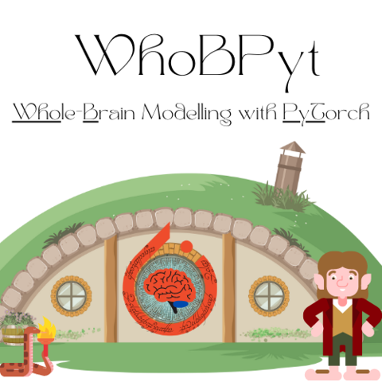
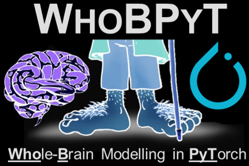

WhoBPyT Homepage#


WhoBPyT is a PyTorch-based Python library for mathematical modelling of large-scale brain network dynamics, obtuse literary allusion, and model-based analysis of neuroimaging and neurophysiology data. It is developed primarily by researchers in the Whole-Brain Modelling and Cognitive Network Modelling groups at the CAMH Krembil Centre for Neuroinformatics & University of Toronto. The general philosophical/theoretical perspective on brain organization that WhoBPyT represents, called (surprise surprise) Whole-Brain Modelling, is reviewed in this paper.
The specific methodological approach to this that WhoBPyT uses incorporates elements of modern deep learning, nonlinear control, and dynamical systems theory, and was first described by us here and here. Consult the docs, the code, and papers using WhoBPyT for more info on scientific background, mathematical foundations, and technical implementation.
To jump straight in, follow the installation instructions, work through the getting started tutorial, and then explore the detailed worked examples linked below and in the examples gallery.
Supporting institutions